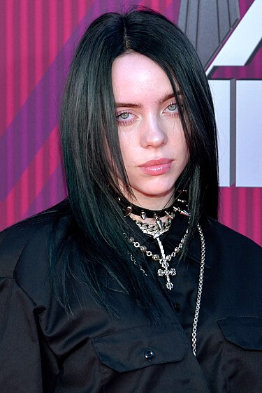

Біллі Айліш Па́йрат Бейрд О'Ко́ннелл[8][9][10] (англ. Billie Eilish Pirate Baird O'Connell, 18 грудня 2001, Лос-Анджелес) — американська співачка, авторка пісень, музикантка, активістка за права тварин.
Лауреатка дев'яти премій «Греммі» (загалом 25 номінацій)[11], трьох MTV Video Music Awards та по дві Brit Awards і American Music Awards, престижних кінопремій за найкращі пісні фільмів — два «Золотих глобуси» («007: Не час помирати», 2022, та «Барбі», 2024) і два «Оскари» («007: Не час помирати», 2022; «Барбі», 2024).
Наймолодша лауреатка в історії Греммі та друга з людей, що отримали всі чотири головні нагороди, — «Найкраща нова виконавиця», «Запис року», «Альбом року» та «Пісня року»
